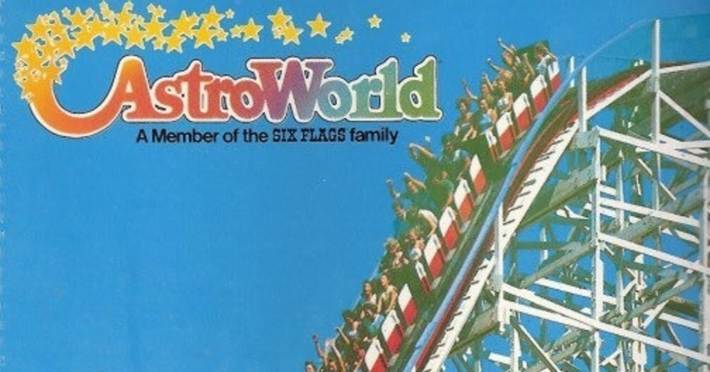

BACKGROUND
Travis Scott is the stage name of Jacques Webster, a Houston-born hip-hop artist and producer.
Jacques grew up in a suburb of Houston and began making music as a teenager.
While his parents were giving him money for school, he was spending it on instruments and enhancing his studio.
When his parents found out, they got extremely mad, which caused Travis to drop out of college and move to Los Angeles with his best friend, whose also a producer, Chase B.
After dropping out of college, Scott moved to Los Angeles and began recording music on his own. He met T.I. and eventually Kanye West. Scott was hired as an in-house producer for GOOD Music, and appeared on the label's Cruel Summer compilation in 2012. Scott's debut, Owl Pharaoh, was originally scheduled to be released as a free mixtape in 2012, but as his profile grew (including a placement in XXL Magazine's Freshman Class of 2013), and due to sample clearance issues, the album wasn't released until May of 2013.
The buildup to Scott's first proper studio album involved the Days Before Rodeo mixtape, promoted with the singles "Don't Play" and "Mamacita," and the March 2015 U.S. Rodeo Tour, for which Scott headlined, supported by Young Thug and Metro Boomin. Several of the dates sold out. During the same month, Rihanna's Scott-produced hit single "B*tch Better Have My Money" was released. "3500" and "Antidote" were released ahead of Rodeo, Scott's second full-length, which followed in September on Grand Hustle/Epic and debuted at number three on the Billboard 200. Toward the end of the year, "Antidote" peaked at number 16 on the Hot 100 and became Scott's first platinum single.
Mamacita
Antidote
Pick Up The Phone
Butterfly Effect
Ahead of the release of Travis Scott‘s hugely-anticipated Astroworld album, we’ve gathered everything you need to know to get even more excited about the album’s drop. After releasing “Butterfly Effect” and rivaling Drake with his status as a human meme, it’s safe to say that the hype for the release of Travis Scott’s Astroworld is reaching a fever pitch. How will he follow up his highly successful sophomore album Birds in the Trap Sing McKnight, released last year? Although Scott’s been spotted in the studio with PARTYNEXTDOOR and Tame Impala, who else did Scott link up with on his new album? When will it actually drop? For all those details and more, read on for a rundown of everything we know so far about Travis Scott’s Astroworld. La Flame is definitely in the studio finishing up the album. In an Instagram post on March 6, Travis Scott shared a photo of himself posted up in the studio with the caption “[locked] in See ya later.” His photographer, RaysCorruptedMind, also posted the same image, adding that Scott is in “album mode.” Travis even posted an Instagram story where he’s listening to his new music driving around L.A.
As seen in this screenshot of Travis Scott's instagram account, he has put AstroWorld in his bio.

Astroworld is named after a now-closed theme park that Travis used to go to in Texas, as a kid.

Travis Scott worked with Kanye West on Yeezus, and the pair have been friends ever since. Scott even signed to West’s G.O.O.D. Music back in 2012.
“Kanye, he’s my buddy. When I got the chance to meet him I was so nervous. He listened to my music and thought it was cool. Two weeks later he sent me an email and I found myself on the way to Paris to take part in his Yeezus album,” he said in an interview with Numéro Homme from March.
Seeing as Travis Scott collabed with Kendrick Lamar this year on “goosebumps,” it’s safe to say that a Kanye West feature on Astroworld wouldn’t be totally crazy, especially since they’re basically family now – Scott is dating Kylie Jenner and Kanye is married to Jenner’s sister Kim Kardashian.
Back in October, OVO crooner PARTYNEXTDOOR was spotted in the studio with Travis Scott, sparking rumors they’re working together on Astroworld.